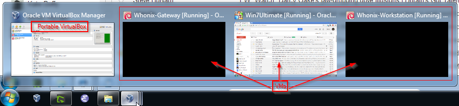
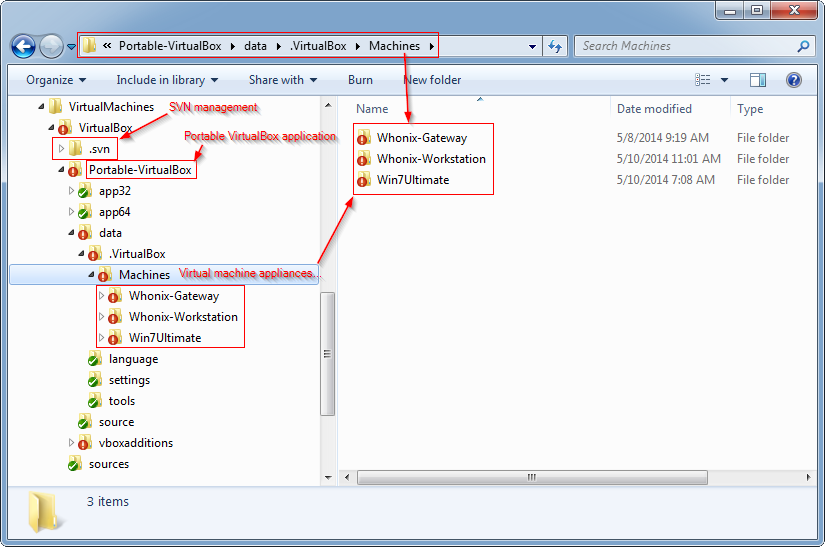
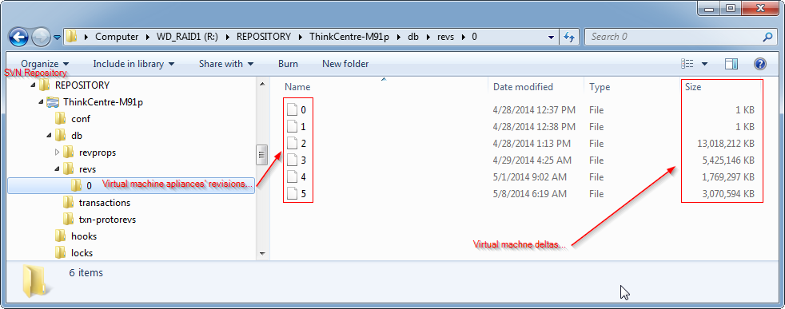

We believe security software like Kicksecure needs to remain Open Source and independent. Would you help sustain and grow the project? Learn more about our 14 year success story and maybe DONATE!
Tor VersioningDocumentationWarningPrevious page: Tor VersioningIndex page: DocumentationNext page: WarningVirtualization Platform Security

Deciding on a Virtualization Platform and Configuration, VirtualBox Hardening
Host Compromise Can Easily Lead to VM Compromise
 If the host operating system (OS) or host computer is ever
compromised, this can easily lead to compromise of any VMs it hosts.
This issue is unspecific to
Kicksecure.
If the host operating system (OS) or host computer is ever
compromised, this can easily lead to compromise of any VMs it hosts.
This issue is unspecific to
Kicksecure.
From a technical viewpoint, the host is at a "lower level", while a VM is at a "higher level". In computer security, lower levels can always override higher levels, which is why host security is of paramount importance. See also Essential Host Security.
With the current hardware commonly available to end-users, operating systems running inside a VM cannot protect themselves from the host. [1]
Type 1 vs Type 2 Hypervisors
 Do not install Qubes inside a virtual machine. Qubes uses its own
bare-metal hypervisor (Xen). [2]
Do not install Qubes inside a virtual machine. Qubes uses its own
bare-metal hypervisor (Xen). [2]
Terminology: operating system (OS)
According to qubes-os.org: [3]
Not all virtual machine software is equal when it comes to security. You may have used or heard of VMs in relation to software like VirtualBox or VMware Workstation. These are known as "Type 2" or "hosted" hypervisors. (The hypervisor is the software, firmware, or hardware that creates and runs virtual machines.) These programs are popular because they're designed primarily to be easy to use and run under popular OSes like Windows (which is called the host OS, since it "hosts" the VMs). However, the fact that Type 2 hypervisors run under the host OS means that they're really only as secure as the host OS itself. If the host OS is ever compromised, then any VMs it hosts are also effectively compromised.
By contrast, Qubes uses a "Type 1" or "bare metal" hypervisor called Xen. Instead of running inside an OS, Type 1 hypervisors run directly on the "bare metal" of the hardware. This means that an attacker must be capable of subverting the hypervisor itself in order to compromise the entire system, which is vastly more difficult.
The take-home message is that Kicksecure for Qubes is more secure than the default Kicksecure configuration using a Type 2 hypervisor such as VirtualBox. Therefore, it is recommended to install Kicksecure for Qubes if users have suitably modern hardware.
VM Snapshots
Apart from offering protection against hardware serial leaks, VMs have another major advantage: the ability to quickly discard and restore a system. This is platform specific:
- Kicksecure-Qubes: This process is easy in Kicksecure-Qubes, since every template-based AppVM used for activities is based on a Template which is only used for software installation and updates, and nothing else. AppVMs are easily discarded and recreated in a clean state whenever the user requires it. [4]
- Kicksecure: In Kicksecure and other virtualizers, greater precaution is required. See below.
Best Practice
It is strongly recommended to keep a master copy of the Kicksecure VM which is:
- Kept updated.
- Does not have any additional software installed.
- Does not have any default settings changed.
- Is not used directly for any activities.
The correct method for the safest operation of Kicksecure is as follows:
- Import the VM into the virtualizer.
- Start the VM.
- Securely update the VM.
- After the updates have finished, shut the VM down. Do not browse anywhere or open any unauthenticated communication channels to the internet.
- Create clones of the VM in its clean state.
- Only use the clones for browsing or initiating any external connections.
Note: The only exception made is running apt, since it
has a guaranteed way to securely download and verify packages.
If this advice is disregarded and a master clean copy of Kicksecure is unavailable for cloning/snapshot purposes, possible workarounds include: [5]
- Renaming the existing Kicksecure and re-importing a new one.
- Renaming the new VM during the import wizard.
Tools
For important VirtualBox information, please press Expand on the right.
 Warning: VirtualBox's VM Snapshot feature is
recommended against because data
loss has been experienced using it. Instead, use clones or other
reliable methods outlined below.
Warning: VirtualBox's VM Snapshot feature is
recommended against because data
loss has been experienced using it. Instead, use clones or other
reliable methods outlined below.
Although VirtualBox's snapshot feature is useful when making interim snapshots of live running systems, it is not recommended as a reliable method for backing up VMs. Data loss is possible, primarily in the form of corrupted virtual hard drives (VHDs). Following VHD corruption, reverting can be very painful or even impossible. Alternative methods include copy / paste, cloning, and exporting / importing. These methods reliably provide VM backups, but disk resources are used inefficiently and manual versioning is required.
SubVersioN (SVN) Backup Tool
SubVersioN is considered the best alternative tool for backing up VM operating environments. It is similar to VirtualBox's snapshot feature, but is much more reliable and efficient. Prior to using it, familiarize yourself with the tool's documentation and design. SVN clients are available for various platforms.
SVN is a tool typically used by software developers to conduct collaborative configuration management, version control, and backup / restore of file sets under development by many people over an extended period of time. The basic functionality of versioning, backing up, and restoring changes to sets of files is available. However, SVN is considered superior to CVS, GIT and other options for VM backups, because it does not have file size limitations by design. Regardless of how big or small the files are, SVN handles them reliably and efficiently. See the following section: "Be patient with large files".
When versioning file sets, SVN employs "atomic commits". By way of comparison, Concurrent Versions System (CVS) does not employ atomic commits. Manual backup procedures are inherently not atomic functions. Additionally, SVN also handles sparse (dynamic) virtual hard disk files, an option VirtualBox offers when instantiating new virtual disk drives.
Similar to VirtualBox's snapshot capability, SVN also takes into consideration differences in files -- both textual and binary -- from version to version. For instance, if a 50 GB virtual hard drive grows to 60 GB over the course of a week, SVN's repository will not necessarily increase by an additional 60 GB when a new backup is performed. The outcome depends on how much of the original file changed since the previous backup. SVN will analyze differences between newer files against older files in its repository and only save the differences. Therefore, the repository may only grow as little as 10 GB+, making more efficient use of system resources.
VirtualBox's snapshot feature provides 'branching' capability. This means it is possible to revert to an earlier version of the VM and start a new branch / version of the VM from where you left off earlier. SVN also provides similar branching capability.
 Tip: For backups and restores, configuration management
tools like SVN require significant additional disk space over and above
the size of the file.
Tip: For backups and restores, configuration management
tools like SVN require significant additional disk space over and above
the size of the file.
For instance, a 50 GB file typically requires approximately 150 GB of disk space to manage that instance of the VM. The reason is that it requires: 50 GB for the original source file, 50 GB in SVN's database repository, and another 50 GB for SVN's local workspace working folder ('./.svn'). Although this overhead may seem inefficient, it is not when you consider SVN's functionality and reliability in comparison to manual backup methods outlined earlier.
Complete Operating Environment Backups
In addition to backing up the Kicksecure virtual hard drive files, it is also possible to back up the whole VirtualBox application and Kicksecure environment for a completely restorable solution. Cloning is another possible option, but that requires more advanced technical skills.
Usually the VirtualBox application that is installed has been provided by VirtualBox.org. However, a portable application version of VirtualBox is available via a tool provided by VBox.me. This application converts VirtualBox's "install application" into a "portable application", thereby providing the option to port VMs to other computers via external USB hard drives and/or USB sticks. By instantiating VMs under portable VirtualBox's ~/data/.VirtualBox/Machines folder, it is possible to back up and restore the complete operating environment of not only Kicksecure, but also specific instances of VirtualBox and SVN for complete portability. This method captures the entire Kicksecure operating environment under one parent folder, rather than distributing it across various user and system folders.
Figure: Complete Kicksecure OS Backup #1

Figure: Complete Kicksecure OS Backup #2

Figure: Complete Kicksecure OS Backup #3

VirtualBox Hardening
For an overview on VM security risks in general, see: How secure are Virtual Machines really?
The fewer features enabled, the smaller the attack surface. The following features can be removed or disabled without impacting core functionality:
- Remove the virtual audio controller to prevent VMs from getting access to a microphone (eavesdropping risk) or speaker (profiling threat).
- Do not enable Shared Folders.
- Do not enable video acceleration.
- Do not enable 3D acceleration. [6] [7]
- Do not enable the Serial Port.
- Remove the Floppy drive.
- Remove the CD/DVD drive.
- Do not enable the Remote Display server.
- Enable PAE/NX (NX is a security feature).
- Do not attach USB devices.
- Disable the USB controller which is enabled by default. Set the Pointing Device to "PS/2 Mouse" or the changes will revert.
It is unclear whether disabling or enabling ACPI, I/O APIC, EFI will provide additional protection; further investigation is required. [8] [9]
See Also
Footnotes
- There might be specialized hardware for clouds that can guarantee integrity/attestation for the operating system running inside the VM. In such cases, users must trust that the proprietary hardware was implemented correctly or consider Homomorphic Encryption. See Confidential Computing. However, none of this is practically available for end-users.
- https://www.qubes-os.org/doc/system-requirements/
- https://www.qubes-os.org/intro/
- https://www.qubes-os.org/doc/templates/
- https://forums.whonix.org/t/help-with-setting-up-multiple-workstations/12235
- Quote https://www.virtualbox.org/manual/ch04.html#guestadd-3d
Untrusted guest systems should not be allowed to use VirtualBox's 3D acceleration features, just as untrusted host software should not be allowed to use 3D acceleration. Drivers for 3D hardware are generally too complex to be made properly secure and any software which is allowed to access them may be able to compromise the operating system running them. In addition, enabling 3D acceleration gives the guest direct access to a large body of additional program code in the VirtualBox host process which it might conceivably be able to use to crash the virtual machine.
- Quote https://hsmr.cc/palinopsia/
If the "3D-Acceleration" feature of VirtualBox is activated, running the proof-of-concept code from inside the VM provides the ability to read framebuffers from the host system.
- Advanced Configuration and Power Interface (ACPI)
 Kicksecure/derivative-maker
ACPI information is passed to the guest OS by default, which allows it
to obtain battery status and manufacturer information. syntax:
Kicksecure/derivative-maker
ACPI information is passed to the guest OS by default, which allows it
to obtain battery status and manufacturer information. syntax:
VBoxManage modifyvm "vm-name" --acpi offExamples: VBoxManage modifyvm "Kicksecure-LXQt" --acpi off
- When attempting to disable I/O APIC, quote VirtualBox settings
graphical user interface:
Since 1 virtual processor is probably too slow nowadays, this might be a bit theoretical.The I/O APIC feature is not currently enabled in the Motherboard section of the System page. This is needed to support more than one virtual processor. It will be enabled automatically if you confirm your changes.
Categories: Documentation